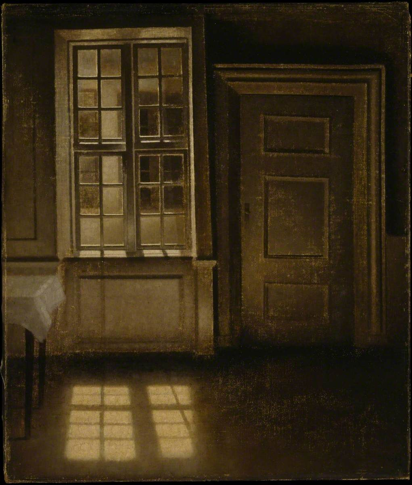

Painting

Interior, Sunlight on the Floor
Vilhelm Hammershøi, 1906
A tall window, a closed door, and the grid of light the window throws onto dark floorboards. The corner of a table draped in white cloth is just visible at the left edge, but it barely registers — the real subject is the rectangle of sun on the floor, the window's mullions reproduced in shadow like a second, flattened window laid flat against the wood.
Hammershøi painted these same rooms in his Strandgade apartment dozens of times over two decades, each canvas quieter than the last. The palette here barely qualifies as colour: deep brown walls, ochre light, everything else receding into near-black. There is no event. The room is not waiting for someone to enter it. It is complete.